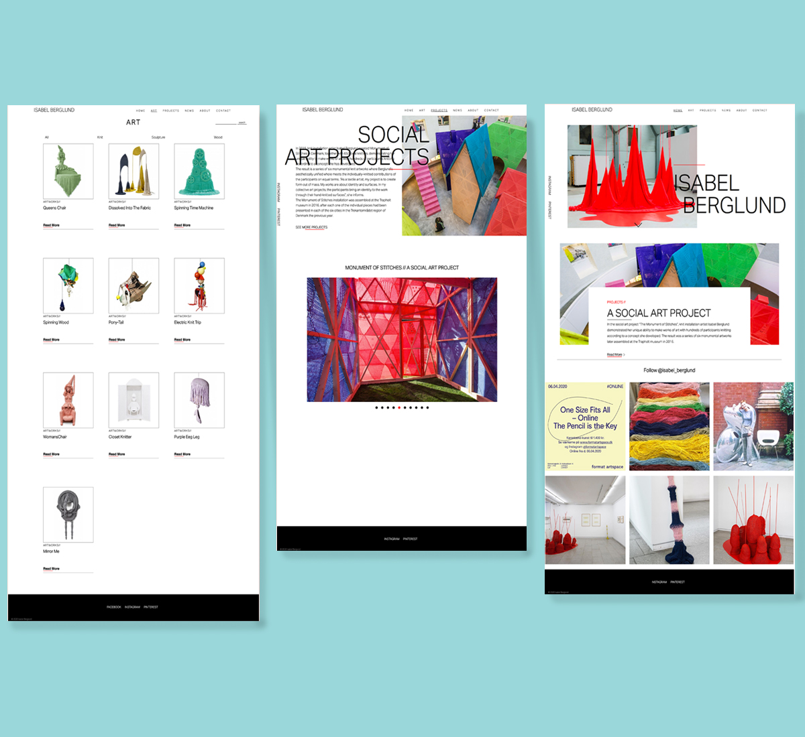
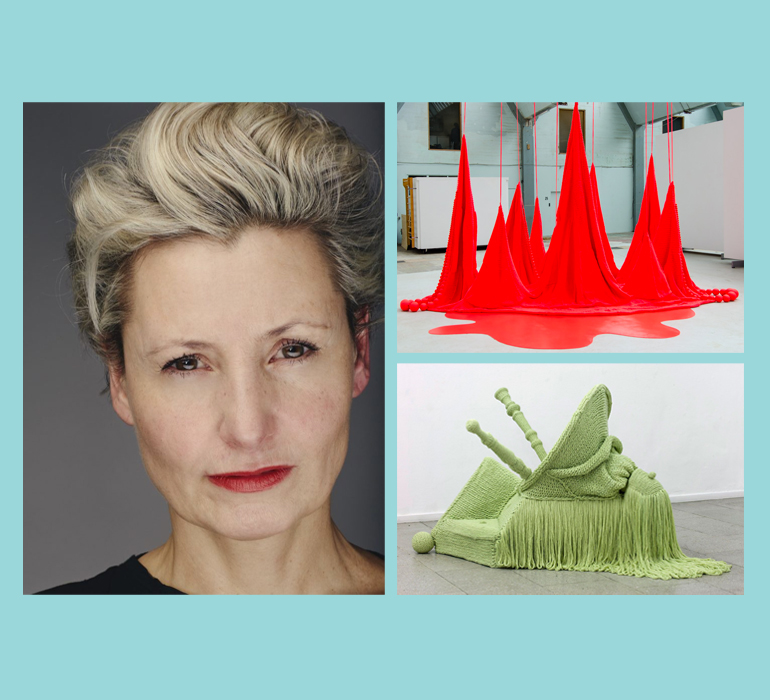
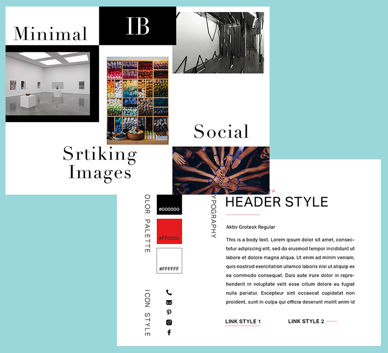
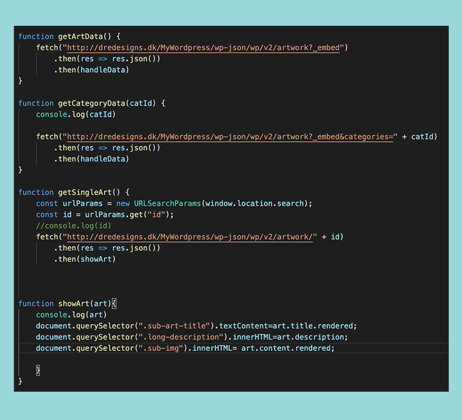

Isabel Berglund

SKILLS
HTML, CSS, JS, API, CMS
DESCRIPTION
This was group project to create an artist portfolio for Isabel Berglund. Isabel encountered difficulties in establishing and maintaining an online presence and effective digital communication strategy in order to promote her art to buyers and other stakeholders.
Our goal was to research and re-design the artist’s existing solution with the aim of improving UI/UX. The re-design would entail an optimized and tested information architecture, grouping content in a way that makes sense to her target audience, as well as a strengthened visual identity. Furthermore, our new solution should enable the artist to make updates herself in a Wordpress backend in order for her to always feature her latest content.
Our group would also create content for her social media channels as well as develop a content strategy for the artist in order for her to better communicate and engage with her audience.
LINK
http://tiffvoli.com/isabel-berglund/
-

Artist Profile
Isabel Berglund, an established knit installation artist from Copenhagen. Her art pieces sometimes can take up to six months to create. In addition to creating art, she leads various art projects such as her “Social Art Projects”. -

Style Tile | Moodboard
Isabel wanted a very simple, clean design similar to her existing website; white background with black typography. We tried to incorporate this into our prototype design, only adding a discreet red accent color as a highlight. -
Video
We created a short introductory video to promote the artist on her social media, specifically Instagram. We focused on her Social Projects because Isabel wanted an emphasis on that. -

CMS | API
We stored all of Isabel artworks and projects in a Wordpress API using Pods. After that, we fetched the data into the website using Json. Isabel would have access to the Wordpress account where she could input her future art pieces and the website would be updated automatically.